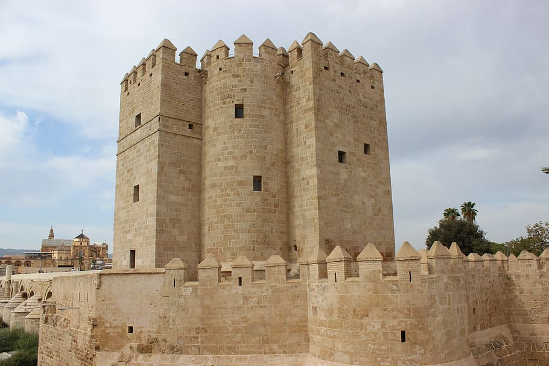

Cordoba ciudad patrimonio
El centro histórico de Córdoba es uno de los cascos antiguos más grandes de Europa. En 1984, la Unesco declaró a la mezquita-catedral de Córdoba como Patrimonio de la Humanidad.Más tarde, en 1994, la Unesco expandió esta denominación a gran parte del casco antiguo.El centro histórico posee una gran riqueza monumental conservando grandes vestigios de la época romana, árabe y cristiana.la ciudad de Córdoba, España.
